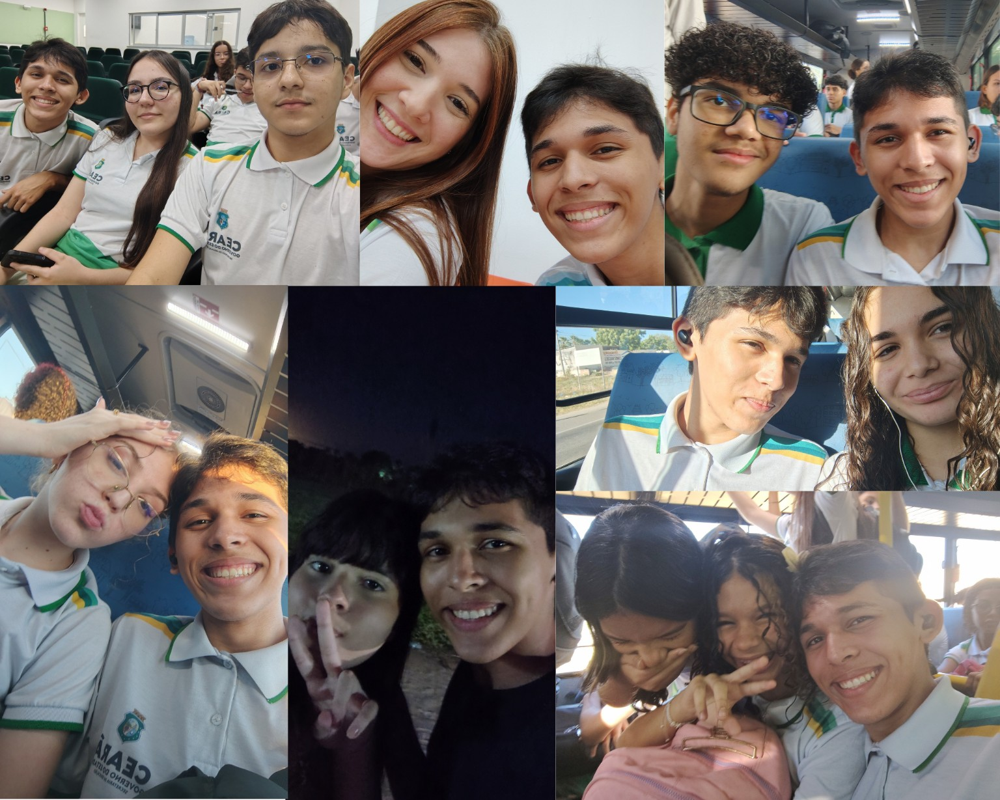

Sobre mim
Esta parte foi pensada para contar minha trajetória de forma simples e pessoal.
Sou estudante do ensino médio e faço um curso na área de informática. Minha trajetória com a tecnologia começou pela curiosidade de entender como os computadores, programas e páginas da internet funcionam.
Ao longo dos estudos, comecei a conhecer diferentes formas de programar e de construir projetos. HTML e CSS foram importantes para entender como uma página é estruturada e como suas partes podem ganhar identidade visual. Também venho conhecendo Python, Portugol, GitHub e ferramentas usadas no desenvolvimento.
Atualmente, meu objetivo é continuar aprendendo e construir uma base cada vez mais sólida em tecnologia. Quero usar os estudos e os projetos para descobrir quais áreas despertam mais meu interesse e, no futuro, transformar esse conhecimento em projetos cada vez mais completos.
Meus amigos
Estas são algumas pessoas que fazem parte da minha trajetória e dos momentos que vivi durante essa caminhada.
